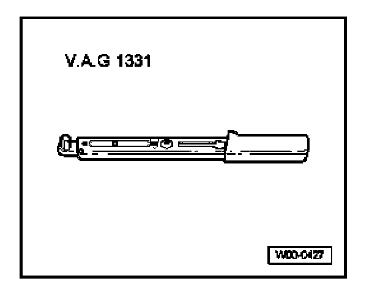
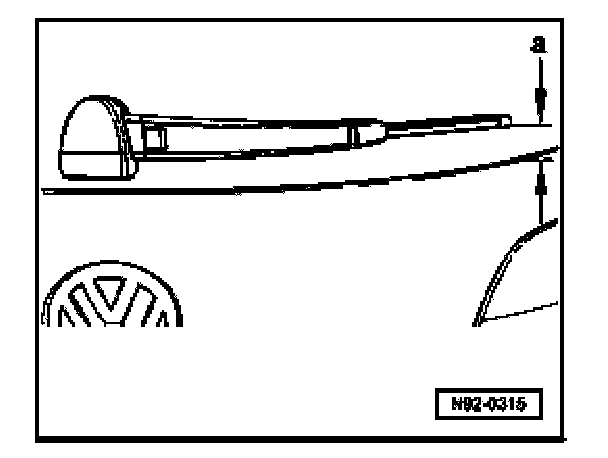

Rear Window Wiper Park Position, Adjusting
Rear Window Wiper Park Position, Adjusting
Special tools, testers and auxiliary items

- VAG 1331 Torque wrench (or 5 - 50 Nm equivalent)
- Move wipers to park position.

Specification: Distance -a- between wiper blade and lower edge of window must be 55 mm.
- Adjust park position by moving wiper arm if necessary.
Wiper arm tightening torque: 12 Nm